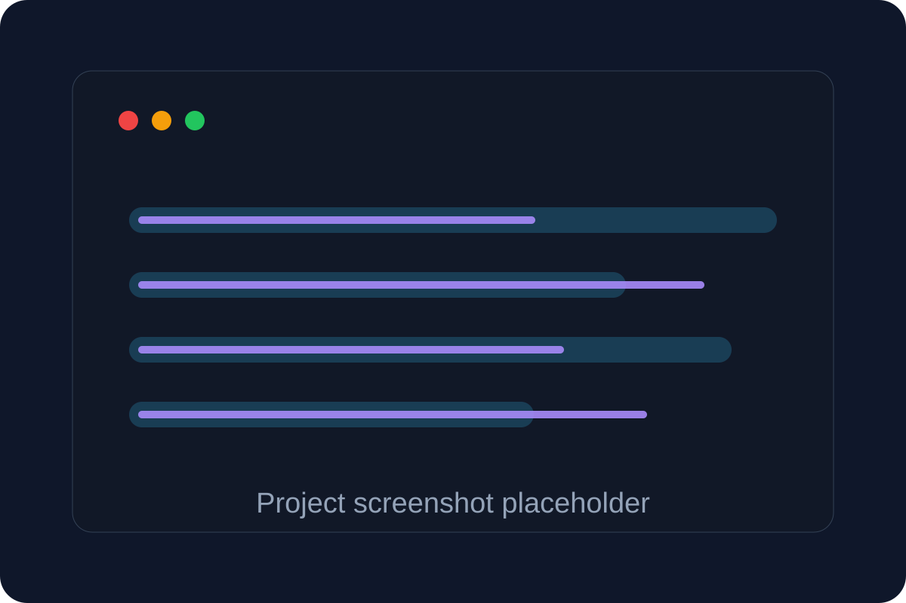

AI Full-Stack Engineer · Cloud Systems · Agentic Workflows
Building reliable software foundations for AI-powered products.
I am a full-stack software engineer with 4+ years of experience across React, Redux, Angular, .NET/C#, REST APIs, AWS, testing, and CI/CD. I am focused on AI Engineer roles where production engineering meets GenAI applications, RAG-ready domain data, tool/API integrations, and AI-assisted developer workflows.
About
Full-stack engineer moving deeper into applied AI.
My background is production software engineering: building enterprise UI workflows, backend APIs, microservices, cloud deployments, test automation, and migration work across insurance and cloud platforms. I am now shaping that experience toward AI engineering by designing systems that make domain data structured, searchable, auditable, and easy for LLM-powered assistants or agentic workflows to use.
The work I want to do next sits at the intersection of product engineering and AI: RAG applications, AI agents, internal copilots, tool-calling workflows, full-stack AI interfaces, evaluation-driven delivery, and developer productivity automation.
AI-ready backend services
Agentic SDLC automation
RAG + semantic search patterns
Full-stack product delivery
Experience
Production engineering experience with AI-facing direction.
Software Development Engineer
Enlyte · Mitchell Cloud Estimating
- Built cloud-native .NET 8 / ASP.NET Core microservices on AWS for estimate profile history, audit trails, schema validation, and carrier-specific rules, creating structured domain data foundations for future semantic search, RAG, and compliance-assistant workflows.
- Developed full-stack React/Redux/TypeScript features and REST APIs for workflows including annotations, accessory part tagging, reviewer/state logic, and configurable carrier rules across complex insurance-domain flows.
- Modernized legacy .NET Framework/Web API services using AWS Transform, standardizing dependency injection, API contracts, logging, CI/CD deployment, and cloud runtime patterns for scalable AI-extendable backend services.
- Prototyped AI-assisted engineering workflows using GitHub Copilot, Azure DevOps/Jira context, repository search, Jenkins logs, and Teams notifications to summarize tickets/PRs, identify impacted files, suggest tests, and triage CI/CD failures.
.NET 8C#ReactReduxAWSCI/CDAI workflows
Software Engineer Intern
Teradata · VantageCloud Lake Console UI
- Built Angular/TypeScript compute-resource management workflows for VantageCloud Lake to provision, scale, poll, and manage cloud resources, improving query performance by 25–50% for compute-intensive workloads.
- Applied AI-assisted development practices to accelerate monorepo codebase understanding, component refactoring, debugging, and test-case generation while following enterprise Angular/Nx design patterns.
- Integrated Pendo Resource Center modules for guides, feedback, announcements, and metrics, enabling product telemetry and user-behavior insights for data-driven UX and AI-assisted support opportunities.
- Contributed reusable Angular/Material components to the Covalent open-source library and redesigned the VantageCloud Lake homepage using component-based architecture for distributed cloud UI teams.
AngularTypeScriptNxPendoCloud UITesting
Senior Software Engineer
ValueLabs · Mitchell Connect
- Led Redux-based state management migration in React, reducing data-handling defects by 30% and improving application performance, scalability, and maintainability across insurance workflows.
- Designed and built RESTful APIs using ASP.NET Web API, enabling reliable integrations across 3+ cross-functional teams and improving backend service reuse.
- Executed AngularJS-to-React modernization with reusable UI patterns, ensuring zero downtime and uninterrupted customer experience during rollout.
ReactReduxASP.NET Web APIModernization
Software Engineer
ValueLabs · Mitchell Connect
- Delivered Jobs & Reports dashboards using React and C#, applying SOLID principles to streamline insurance claim and repair workflows by 10%.
- Built reusable, modular UI components as part of a shared design system adopted by 15+ internal teams.
- Implemented comprehensive unit and end-to-end test coverage with Jest and Cypress, reducing post-production defects and improving release quality.
ReactC#JestCypressDesign systems
Projects
AI, full-stack, and applied software projects.
Project links are placeholders where a live demo or repository URL is not available yet.

AI agents · Developer productivity
AI SDLC Agent Workspace
Prototype concept for connecting Azure DevOps/Jira, GitHub repository context, Jenkins logs, and Teams notifications to summarize tickets, locate impacted files, suggest tests, and triage CI/CD failures.
GitHub CopilotTool callingRAG-ready contextJenkins
Full-stack analytics
GitView
GitHub analytics app with OAuth, contributors, commits, pull requests, date-range filtering, CSV/Excel upload, and visual dashboards for engineering productivity insights.
ReactNode.jsGitHub OAuthCharts
Machine learning · Testing
ML Test Case Reduction
Research project focused on reducing test suites using Random Forest, K-Means, Decision Trees, adequacy scores, and labels to maximize coverage with fewer tests.
PythonScikit-learnMLTesting
Recommendation systems
Personalized News Recommender
Content-based recommendation system using React, Redux, MongoDB, Python, and Scikit-learn, built on a large news dataset to personalize article discovery and engagement.
ReactReduxPythonScikit-learn
IoT · Cloud ML
Smart Irrigation
IoT irrigation control system using Python, React Native, AWS, and KNN-based ML logic to optimize watering decisions from sensor-driven environmental data.
PythonAWSReact NativeIoT
Enterprise full-stack
Cloud Estimating Workflow Modernization
Enterprise engineering work across React/Redux UI, .NET services, schema validation, profile history, and cloud deployment patterns to improve reliability in insurance estimation workflows.
ReactRedux.NET 8AWS
Skills
Skill map for AI full-stack roles.
AI Engineering
Generative AI, AI agents, RAG, semantic search, embeddings, vector database concepts, prompt/context engineering, MCP-style tool calling, LLM evaluation, guardrails.
Frontend
React, Redux, Angular, TypeScript, Next.js, Tailwind, Material UI, component-based design systems, accessibility-minded UI workflows.
Backend
ASP.NET Core, ASP.NET Web API, C#, Node.js, Express, GraphQL, REST APIs, microservices, API contracts, structured logging.
Cloud & DevOps
AWS EC2, Lambda, S3, API Gateway, IAM, serverless architecture, Docker, Jenkins, GitHub/GitLab, Azure DevOps, CI/CD automation.
Data & Databases
PostgreSQL, MySQL, MongoDB, SQL Server, NoSQL patterns, schema validation, domain metadata modeling, vector search concepts.
Testing
Jest, Cypress, React Testing Library, Enzyme, unit and integration testing, AI-assisted test generation, regression quality workflows.
Education
Academic background.
Arizona State University
Master of Science in Computer Software Engineering · CGPA: 3.70
Aug 2022 – May 2024 · Tempe, AZSchool of Engineering and Technology, Jain University
Bachelor of Technology in Computer Science and Engineering · CGPA: 8.016
Aug 2016 – Aug 2020 · Bangalore, IndiaPlaceholders
Empty slots to fill later.
I left these ready because the resume does not include final links or assets for them yet.
Professional photo
Add assets/profile.jpg and update the image path in index.html.
Live demos
Add links for GitView, AI SDLC Agent Workspace, Smart Irrigation, or Hugging Face demos.
Blog / writing
Add AI engineering posts, case studies, or architecture notes.
Certifications
Add AWS, Azure, AI, or full-stack certifications if you decide to include them.